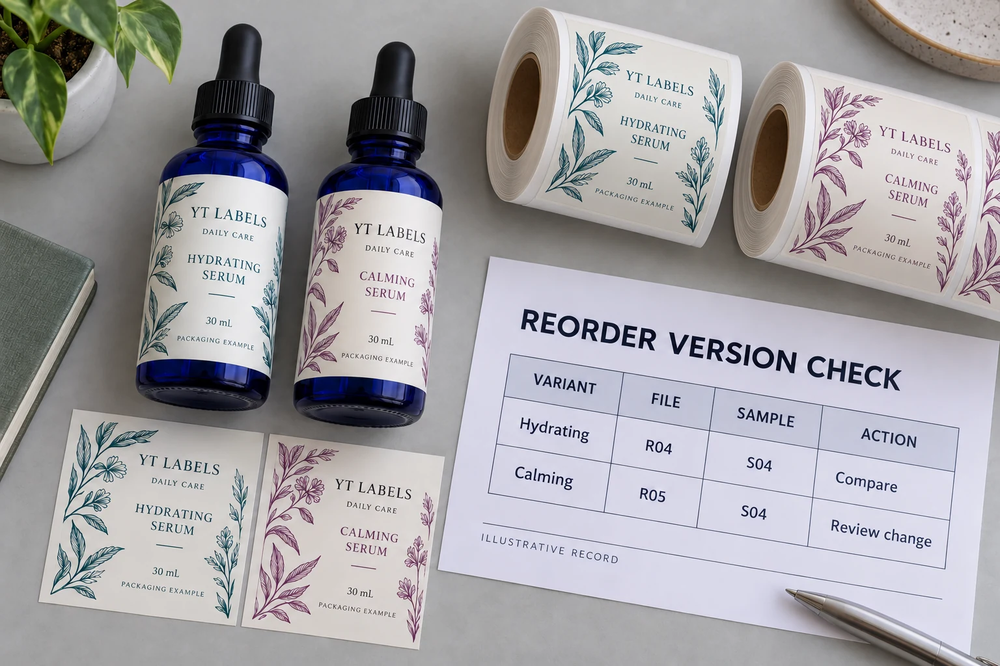

A previous purchase order is a starting point
The old order helps identify the job, supplier and quantities. It does not tell a new employee which artwork is current, whether the bottle supplier changed, or whether a material substitution was discussed after delivery.
Ask the printer to identify the job it intends to repeat. Compare that record with the brand’s current release, including the artwork filename and revision, label dimensions, construction, finish and delivery format. Mark unknown fields for confirmation rather than filling them from memory.
A repeat order can justify a shorter review when the approved conditions genuinely remain unchanged. It does not justify skipping the comparison that establishes that fact.
Keep commercial terms separate. Reusing artwork does not, by itself, confirm today’s price, availability, production slot or freight arrangement. Request a current quotation against the identified specification.
Make one release row for each SKU
One shared folder is useful. One clear record of which file is approved for each item is more useful.
For each SKU, record the product and market version, exact artwork revision, quantity, physical reference ID, specification revision, approval status and responsible approver. A filename such as serum-final-new.pdf is easy to recognize and difficult to control. Use a naming convention that identifies the item and revision, then record the actual approval against that version.
Esko’s packaging workflow overview describes centralized version control, version comparison and approval tracking, including management of cosmetic market variants. Those are software capabilities, not evidence that a particular label is correct. The practical lesson for a smaller team is to keep its approval attached to an identifiable file.
A controlled spreadsheet and restricted release folder may be enough for a small range. A larger team with concurrent agency, brand and regional reviews may benefit from dedicated workflow software. Choose the system your team can keep current; buying more features does not assign an approver.
Read the changes, even when the front looks identical
Compare the proposed file with the last approved artwork. Review changed copy, product identifiers, dimensions, dielines, layers and finish instructions. A visual comparison tool can help locate differences. The responsible reviewers still need to decide whether those differences are intended.
Consider this illustrative record. The sample codes are local references, not test grades:
| Variant | Proposed file | Retained sample | Next action |
|---|---|---|---|
| Hydrating serum | R04 | S04 | Confirm that S04 corresponds to R04 and compare the specification |
| Calming serum | R05 | S04 | Review the revision; the older sample does not establish approval of R05 |
The second row is where a hurried repeat can go wrong. The front may be unchanged while a side or back panel differs. Record what changed, who approved it and whether another proof or physical evaluation is needed. Product wording and market suitability remain with the brand’s responsible reviewers.

For a range-wide design question, use our skincare label system guide. Here, the narrower task is deciding which exact version is allowed into a repeat order.
Keep the physical reference identifiable
A bottle kept on a shelf is useful only if the team knows what it represents. Identify the sample, its artwork revision, material and finish, relevant order reference, and the date it was accepted. Keep any recorded limitations with it.
Check its condition before treating it as a visual target. In guidance about its own printed color guides, Pantone explains that handling, fading, storage and light exposure can change appearance over time. That is a reason to question an old reference’s condition, not a shelf-life rule for your labels.
If color matching matters, agree the reference and assessment method with the printer. A phone photo can help identify the pack; it should not silently become the color acceptance standard. Our cosmetic label color matching guide covers that separate proofing discussion.
Decide what the change actually reopens
Two hypothetical buyers can reasonably choose different routes.
The first is replenishing one established serum. Artwork, bottle, label construction and application arrangement are confirmed unchanged, and the retained reference is identifiable. A documented repeat review may be proportionate, subject to the supplier’s current confirmation.
The second has moved to another bottle finish, accepted an alternative adhesive or changed the labeling site. The logo can stay exactly where it was while the physical job changes. Ask which fit, adhesion, appearance or application checks need repeating before release. Do not infer suitability from the unchanged product name.
There is a cost on both sides. Repeating every possible evaluation for a genuinely unchanged job can add unnecessary work. Skipping a relevant check after a construction change can leave the buyer with labels the receiving team cannot use. Scope the review around the identified change and its consequences.
If the barcode or its printing conditions changed, refer to the finished-bottle barcode approval guide rather than treating an old report as blanket permission.
Send a reorder brief the supplier can answer
Send YT Labels the previous job or order reference, current bottle details, approved artwork revision for each SKU, quantity by version, label specification and physical-reference details. List changes explicitly, including items still awaiting confirmation. Add the destination and requested in-hand date for a current quotation.
For a cosmetic bottle label reorder, use the inquiry form to prepare your message, then attach the artwork and reference documents when sending it by email or WhatsApp. The form itself does not upload or send those attachments.
Before giving the production release, make sure the supplier’s acknowledgment names the same versions your team approved. That is the moment to resolve the two serum PDFs still sitting in the folder.